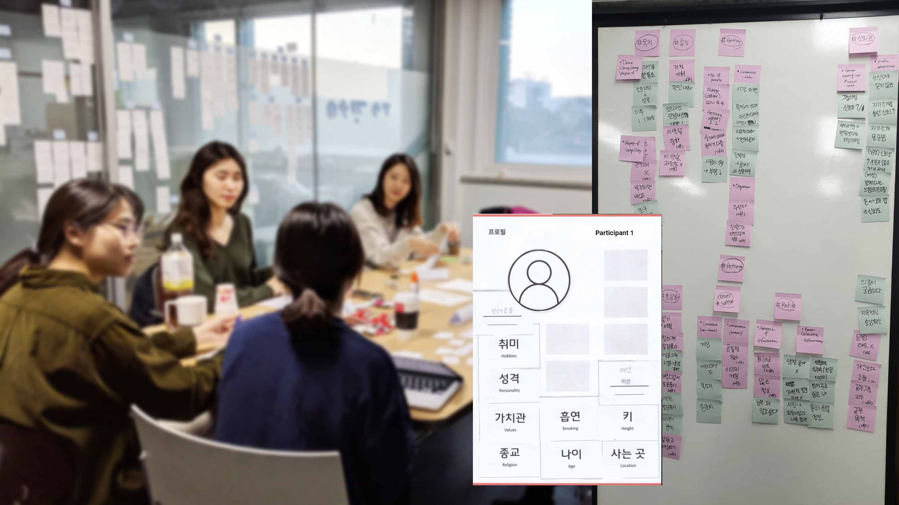
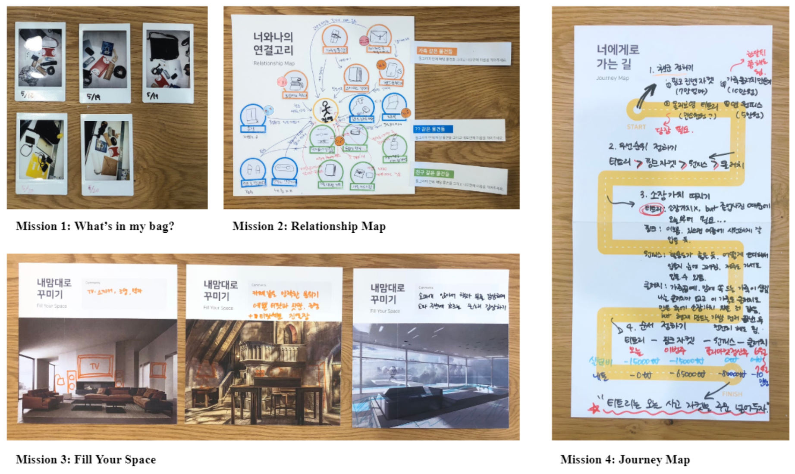
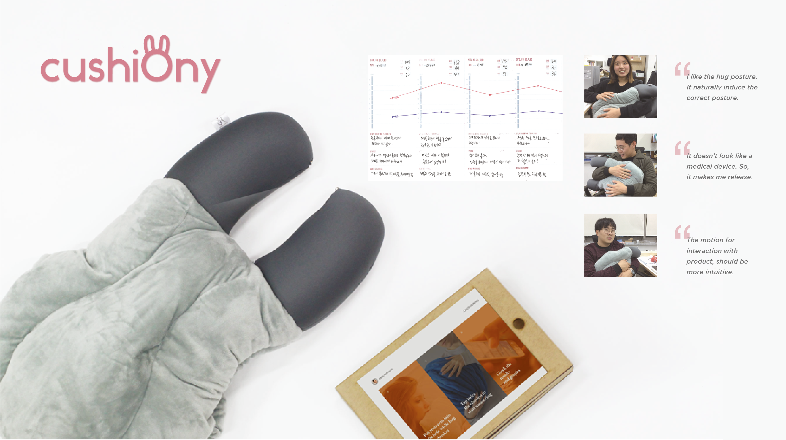
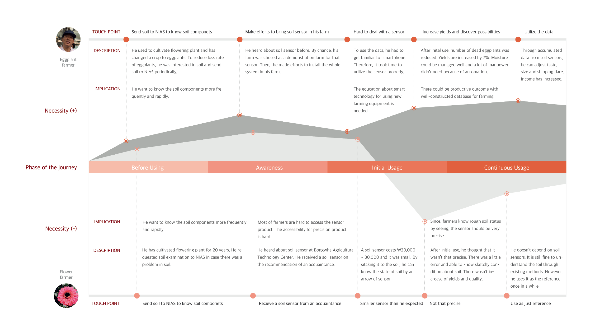
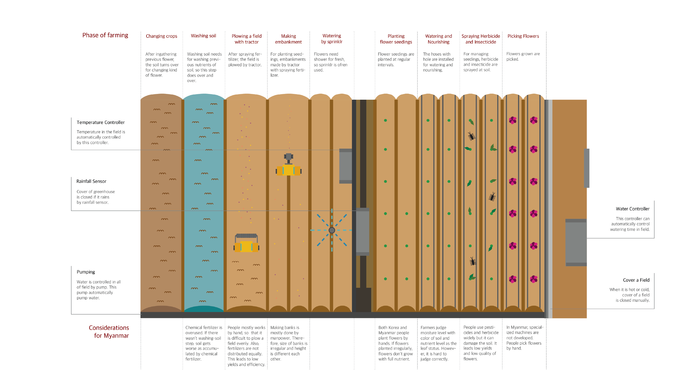

accessibility
people with vision impairments
voice user interaction
empirical study
Full paper
Dasom Choi, Daehyun Kwak, Minji Cho, and Sangsu Lee.
In Proceedings of the ACM SIGCHI Conference on Human Factors in Computing Systems (CHI 2020)
Best Paper Honorable Mention (Top 5%)
The number of people with vision impairments using Conversational Agents (CAs) has increased because of the potential of this technology to support them. As many visually impaired people are accustomed to understanding fast speech, most screen readers or voice assistant systems offer speech rate settings. However, current CAs are designed to interact at a human-like speech rate without considering their accessibility. In this study, we tried to understand how people with vision impairments use CA at a fast speech rate. We conducted a 20-day in-home study that examined the CA use of 10 visually impaired people at default and fast speech rates. We investigated the difference in visually impaired people’s CA use with different speech rates and their perception toward CA at each rate. Based on these findings, we suggest considerations for the future design of CA speech rate for those with visual impairments.
accessibility
people with vision impairments
voice user interaction
empirical study
Short paper
Designing a Crowdsourcing Platform for Generating Subtitles of Accessible Films.
Dasom Choi, Aikerim Orken, Han Lee, and Hwajung Hong.
HCI Korea 2017
In this paper, we introduce a crowdsourcing platform that generates subtitles in order to produce barrier-free movies for people with hearing impairments. This paper describes the results of a pilot study that identifies design guidelines and approaches for generating accessible subtitles. We propose ALLSUB, a crowdsourcing platform that enables web users to produce descriptive captions of short video clips. The ultimate goal of this project is to provide opportunities for people with hearing impairment to access much more movies without barriers by gathering works from the community.
accessibility
people with hearing impairments
crowdsourcing
developing platform
2019
Exploring the design direction of online group-dating platform.

This project is aimed at suggesting a new concept of the online group-dating platform to 20s people. Through a focus group with four participants, we tried to understand the obstacles and needs of users for the online group-dating platform and discover critical design factors that should be considered when designing that platform.
From the experiment, we found that participants think of online group dating as a pathway to offline meetings, and they think that participants think that group meetings could increase the trust of the online dating platform rather than 1:1 online dating services. Furthermore, participants do not fully trust the profile; however, more information could give better confidence, and they want diverse activities that can convey people’s characteristics during the process of getting to know each other.
focus group interview
2019
Designing an organizing service for maximalists.

In this project, we aim to find design directions for shopping assistant service for maximalists by understanding their thoughts and values. We conducted a cultural probe methodology to evoke the underlying behaviors and attitudes of maximalists. We discovered that the maximalist participants want to be lighter but do not want to give up anything, and once an object is on the shopping list, they will eventually buy it. Through a cultural probe, we were able to derive several design directions.
cultural probe
2019
Designing service to vitalize the local DJ club

The goal of our project was “to design a platform that helps interaction between local DJ club staff and customers.” Through the contextual inquiry and ethnography methods, we tried to investigate the workflow of DJs and staff of the club and how they interact with the customers. As a result, we derived five key design directions by analyzing interview data and creating a 'physical model' and 'workflow model.'
contextual inquiry
interview
2016
cushiony: a cushion type home blood pressure monitor
Redesign project through user research

This project is the result of the UX research methodology class in 2016. In the course, we investigated the problems of the existing OMRON blood pressure monitor by conducting a diary study. After then, we redesigned the blood pressure monitor according to the three main keywords from extracted user needs. As a result, we proposed a cushion-type blood pressure monitor, a 'cushiony.' With cushiony, patients can feel more comfortable while checking their blood pressure.
diary study
interview
redesign
2016
Improving the precision agricultural system in Myanmar
 
The project was conducted in the Product Design 2 class in 2016. The course worked with a company called 'proximity' to design agricultural products in Myanmar. The company presented a theme for 'applying precision agricultural technology to Myanmar.' To understand the existing problems and needs of the Myanmar farmer, we conducted written interviews with them. Furthermore, we did ethnography by visiting the local farm in Korea to have a better picture of the agricultural system. We presented a user journey comparing the needs of two farmers in different countries - Myanmar and South Korea.
user persona
user journey